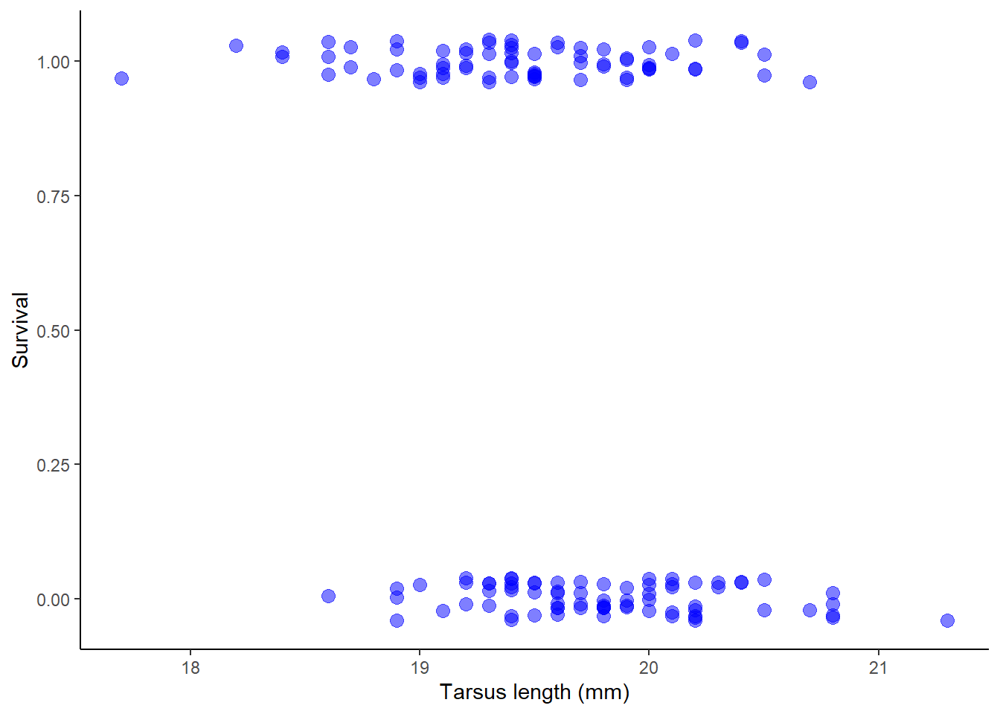
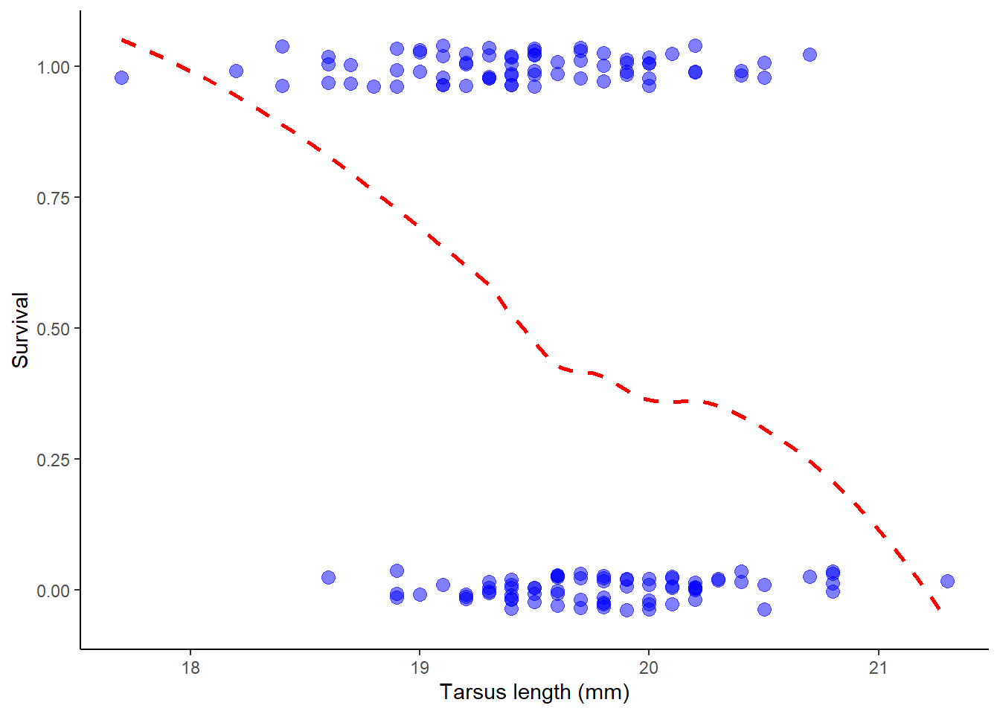
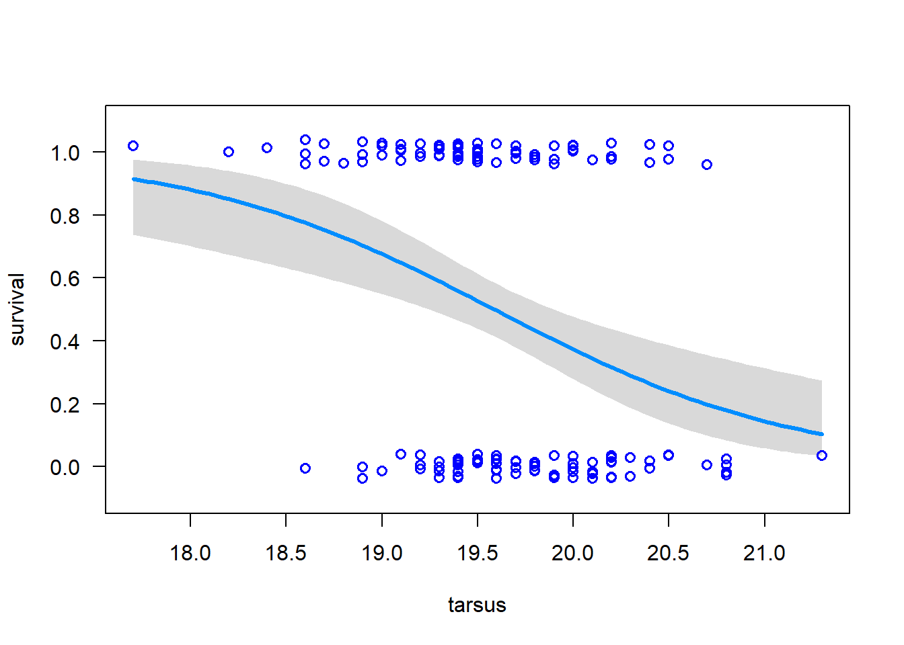

Logistic regression is a statistical model used to predict the probability of a binary outcome based on one or more predictor variables. It is commonly used in many fields.
Key Concepts
Logistic regression is a statistical model used to predict the probability of a binary outcome.
It is based on the logistic function, which maps any real-valued number to a value between 0 and 1.
The predictor variables in logistic regression can be continuous or categorical.
The coefficients in logistic regression represent the influence of each predictor variable on the outcome.
Logistic regression can be used for both binary and multi-class classification problems.
The song sparrow population on the island of Mandarte has been studied for many years by Jamie Smith, Peter Arcese, and collaborators. The birds were measured and banded and their fates on the island have recorded over many years. Here we will look for evidence of natural selection using the relationship between phenotypes and survival.
The data file songsparrow.csv gives survival of young-of-the-year females over their first winter (1=survived, 0=died). The file includes measurements of beak and body dimensions: body mass (g), wing length, tarsus length, beak length, beak depth, beak width (all in mm), year of birth, and survival. These data were analyzed previously in D. Schluter and J. N. M Smith (1986, Evolution 40: 221-231).
library(ggplot2)
Warning: package 'ggplot2' was built under R version 4.3.3
library(visreg)library(MASS)x <-read.csv("files/songsparrow.csv")# Show the header of the datahead(x)
mass wing tarsus blength bdepth bwidth year sex survival
1 23.7 67.0 17.7 9.1 5.9 6.8 1978 f 1
2 23.1 65.0 19.5 9.5 5.9 7.0 1978 f 0
3 21.8 65.2 19.6 8.7 6.0 6.7 1978 f 0
4 21.7 66.0 18.2 8.4 6.2 6.8 1978 f 1
5 22.5 64.3 19.5 8.5 5.8 6.6 1978 f 1
6 22.9 65.8 19.6 8.9 5.8 6.6 1978 f 1
Plot the data.
# 2. Year as categorical variablex$year <-as.character(x$year)# 3. Plot survival against tarsus lengthggplot(x, aes(tarsus, survival)) +geom_jitter(color ="blue", size =3, height =0.04, width =0, alpha =0.5) +labs(x ="Tarsus length (mm)", y ="Survival") +theme_classic()

Visualise with a trend line.
# add trend line with geom_smooth()ggplot(x, aes(tarsus, survival)) +geom_jitter(color ="blue", size =3, height =0.04, width =0, alpha =0.5) +geom_smooth(method ="loess", size =1, col ="red", lty =2, se =FALSE) +labs(x ="Tarsus length (mm)", y ="Survival") +theme_classic()
Warning: Using `size` aesthetic for lines was deprecated in ggplot2 3.4.0.
ℹ Please use `linewidth` instead.
`geom_smooth()` using formula = 'y ~ x'

Analysis
Fit the model.
# Fit generalized linear modelz <-glm(formula = survival ~ tarsus, family =binomial(link="logit"), data = x)
Visualize the model.
# Visualize model fit (data points added with points() )visreg(z, xvar ="tarsus", scale ='response',rug =FALSE, ylim =c(-.1, 1.1))points(jitter(survival, 0.2) ~ tarsus, data = x, pch =1, col ="blue", cex =1, lwd =1.5)

Examine the model results
# Estimate regression coefficient for tarsussummary(z)
Call:
glm(formula = survival ~ tarsus, family = binomial(link = "logit"),
data = x)
Coefficients:
Estimate Std. Error z value Pr(>|z|)
(Intercept) 24.6361 6.7455 3.652 0.000260 ***
tarsus -1.2578 0.3437 -3.659 0.000253 ***
---
Signif. codes: 0 '***' 0.001 '**' 0.01 '*' 0.05 '.' 0.1 ' ' 1
(Dispersion parameter for binomial family taken to be 1)
Null deviance: 200.95 on 144 degrees of freedom
Residual deviance: 185.04 on 143 degrees of freedom
AIC: 189.04
Number of Fisher Scoring iterations: 4
# Test null hypothesis of zero slopeanova(z, test ="Chi")
Warning: package 'fmsb' was built under R version 4.3.3
NagelkerkeR2(z)
$N
[1] 145
$R2
[1] 0.1385605
Conclusion
Report the results.
We found a highly significant, negative effect of tarsus length on survival in the song sparrow (logistic regression: chi sq. = 15.9, df = 1, 143, p < 0.0001, Nagelkerke’s R^2 = 13.9% of variance explained).
Wolff, A., Gooch, D., Montaner, J.J.C., Rashid, U., Kortuem, G., 2016. Creating an Understanding of Data Literacy for a Data-driven Society. The Journal of Community Informatics 12. https://doi.org/10.15353/joci.v12i3.3275
Schluter, D., Smith, J.N.M., 1986. Natural Selection on Beak and Body Size in the Song Sparrow. Evolution 40, 221–231. https://doi.org/10.1111/j.1558-5646.1986.tb00465.x
Nagelkerke N (1991) A note on a general definition of the coefficient of determination. Biometrika, 78: 691-692.
Faraway JJ (2006) Extending the linear models with R: Generalized linear, mixed effects and nonparametric regression models. Chapman and Hall.